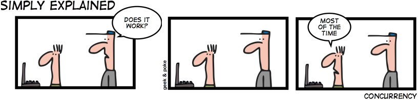

A lot of new features to have native implementation were added
File API to have native drag and drop, desktop drag in
FileSystem API allows to create, delete and save files in the user machine.
Web SQL Storage
IndexDB
Web Storage
Aplication Cache
WebWorkers
WebSockets
Storage
JavaScript API
With html5 and the javascript API allow save data on the client device usign different strategies.
Web SQL Dabase
We can create a structured data base in the client device
var db = window.openDatabase("DBName", "1.0", "description",
5*1024*1024); //5MB
db.transaction(function(tx) {
tx.executeSql("SELECT * FROM test", [], successCallback, errorCallback);
});
Index DB
JavaScript API
We have a key value, so we don't have to iterate for each item
var idbRequest = window.indexedDB.open('DatabaseName');
idbRequest.onsuccess = function(event) {
var db = event.srcElement.result;
var transaction = db.transaction([], IDBTransaction.READ_ONLY);
var curRequest =
transaction.objectStore('ObjectStoreName').openCursor();
curRequest.onsuccess = ...;
};
Web Storage
JavaScript API
It's a key value mapping, so we don't have to iterate for each item
The key value support only string-to-string mapping
It's a key value mapping, so we don't have to iterate for each item
The key value support only string-to-string mapping
<html manifest="cache.appcache">
window.applicationCache.addEventListener('updateready', function(e) {
if (window.applicationCache.status == window.applicationCache.UPDATEREADY) {
window.applicationCache.swapCache();
if (confirm('A new version of this site is available. Load it?')) {
window.location.reload();
}
}
}, false);
File API
JavaScript API
This API allows create, delete, open files in the user device
We can create folders
window.requestFileSystem(window.TEMPORARY, 1024 * 1024, function(fs) {
// fs.root is a DirectoryEntry object.
fs.root.getFile('log.txt', {create: true}, function(fileEntry) {
fileEntry.createWriter(function(writer) {
// writer is a FileWriter object.
writer.onwrite = function(e) { ... };
writer.onerror = function(e) { ... };
var bb = new BlobBuilder();
bb.append('Hello World!');
writer.write(bb.getBlob('text/plain'));
}, opt_errorHandler); }
}, opt_errorHandler);
File API
JavaScript API
We have native drag and drop functionallity
(function() {
var files = document.querySelectorAll('a.dragout');
for (var i = 0, file; file = files[i]; ++i) {
file.addEventListener('dragstart', function(e) {
var strippedUrl = document.location.toString().split("Views");
var href = this.getAttribute('href');
var dataDownloadUrl = 'audio/mpeg:' + href.substring(9, href.length).
replace(' ', '%20') + ':' + strippedUrl[0].toString() +
href.substring(3, href.length).replace('\\','/').replace(' ', '%20');
e.dataTransfer.setData('DownloadURL', dataDownloadUrl);
}, false);
}
})();
JavaScript API - Web Workers
JavaScript API - Web Workers
The concurrency problem

JavaScript is a single-threaded environment, meaning multiple scripts cannot run
at the same time.
Script execution happens within a single thread.
Developers mimic 'concurrency' by using techniques like setTimeout(), setInterval(),
XMLHttpRequest, and event handlers.
All of these features run asynchronously, but non-blocking doesn't necessarily mean
concurrency
Asynchronous events are processed after the current executing script has yielded
JavaScript API - Web Workers
A common scenario
Web Workers allow you to do things like fire up long-running scripts to handle computationally
intensive tasks, but without blocking the UI or other scripts to handle user interactions.
JavaScript API - Web Workers
Getting Started with Web Workers
Workers utilize thread-like message passing to achieve parallelism. They're perfect
for keeping your UI refresh, performant, and responsive for users.
Web Workers run in an isolated thread
The code that they execute needs to be contained in a separate file
Browser support using Modernizr
if (Modernizr.webworkers) {
alert("Web Workers ARE supported");
}
else {
alert("Web Workers ARE NOT supported");
}
Create a new Worker object in your main page
var simpleWorker = new Worker('doSomeWork.js');
If the specified file exists, the browser will spawn a new worker thread, which
is downloaded asynchronously. The worker will not begin until the file has completely
downloaded and executed. If the path to your worker returns an 404, the worker will
fail silently.
After creating the worker, start it by calling the postMessage() method:
simpleWorker.postMessage(); // Start the worker.
JavaScript API - Web Workers
Hello WebWorker
Communication between a work and its parent page is done using an event model and
the postMessage() method.
Main Page
var simpleWorker = new Worker('doSomeWork.js');
simpleWorker.addEventListener('message', function(e) {
console.log('Simple Worker said: ', e.data);
}, false);
simpleWorker.postMessage('Hello World'); // Send data to our worker.
Web workers only has access to a subset of JavaScript's features:
The navigator object
The location object (read-only)
XMLHttpRequest
setTimeout()/clearTimeout() and setInterval()/clearInterval()
The Application Cache
Importing external scripts using the importScripts() method
Spawning other web workers
Workers do NOT have access to:
The DOM (it's not thread-safe)
The window object
The document object
The parent object
JavaScript API - Web Workers
SECURITY TIPS
RESTRICTIONS WITH LOCAL ACCESS
Due to Google Chrome's security restrictions, workers will not run locally (e.g.
from file://) in the latest versions of the browser. Instead, they fail silently!
To run your app from the file:// scheme, run Chrome with the --allow-file-access-from-files
flag set.
SAME ORIGIN CONSIDERATIONS
Worker scripts must be external files with the same scheme as their calling page.
Thus, you cannot load a script from a data: URL or javascript: URL, and an https:
page cannot start worker scripts that begin with http: URLs.
USE CASES
Prefetching and/or caching data for later use
Code syntax highlighting or other real-time text formatting
Spell checker
Analyzing video or audio data
Background I/O or polling of webservices
Processing large arrays or humungous JSON responses
Image filtering in CANVAS
Updating many rows of a local web database
JavaScript API - Web Sockets
JavaScript API - Web Sockets
"The web has been largely built around the so called request/response paradigm
of HTTP."
Today’s web app require…
Real time (minimal latency)
Full duplex
For…
Social Networking
Online Games
Collaborative platforms
Finnancial applications
HTTP isn’t really an ideal protocol for performing frequent requests as:
It’s not optimized for speed
It utilizes a lot of bandwidth for every request with various headers etc sent with
every request
To keep an application up to date many requests must be sent
Firewalls & proxys sometimes buffer streaming/long polling solutions increasing
latency
Long polling & streaming solutions are not very scalable
JavaScript API - Web Sockets
According to W3C
"Abstract: This specification defines an API that enables Web pages to use
the WebSocket protocol (defined by the IETF) for two-way communication with a remote
host."
WebSockets are a new technology that attempts to resolve some of these limitations
by:
Sending the minimum amount of data necessary
Making more efficient usage of bandwidth
Providing cross domain support
Still operating over HTTP so it can transverse firewalls and proxies
Works with some load balancers (TCP l4)
Provides support for binary data (note some JavaScript implementations don’t
currently support this)
When would web sockets be a suitable protocol for your application?
You might want to consider using web sockets in the following scenarios:
Games
Real time data
Chat applications
News tickers
JavaScript API - Web Sockets
WebSocket Events
onopen: When a socket has opened
onmessage:
When a message has been received
onclose: When a socket has
been closed
Geting started with WebSockets
var socket = new WebSocket("ws://localhost:8000/startServer.aspx");
//Notify me when the WebSocked was opened
socket.onopen = function(){
alert("Socket has been opened!");
}
//Receiving a message
socket.onmessage = function(msg){
alert(msg); //Awesome!
}